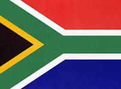

Introduction :

The South African Cricket Team represents South Africa in international cricket. It is governed by Cricket South Africa (CSA). South Africa is known for its strong, fast, and competitive cricket team.
South Africa became a member of the International Cricket Council (ICC) in 1909 and played its first Test match in 1889 against England.
Formats of Cricket Played by england :
The South Africa cricket team plays cricket in three main formats:
1. Test Cricket
- Longest format of cricket
- Played for 5 days
- Each team plays two innings
- Players wear white clothes
- Played with a red ball
2. One Day International (ODI)
- Match of 50 overs per team
- Played in one day
- Players wear colored jerseys
- Played with a white ball
3. Twenty20 International (T20I)
- Shortest format of cricket
- 20 overs per team
- Very fast and entertaining
- Played mostly at night under lights
Information:
- 🏆 ICC Champions Trophy: 1998
- 🏏 Consistent top team in Tests and ODIs